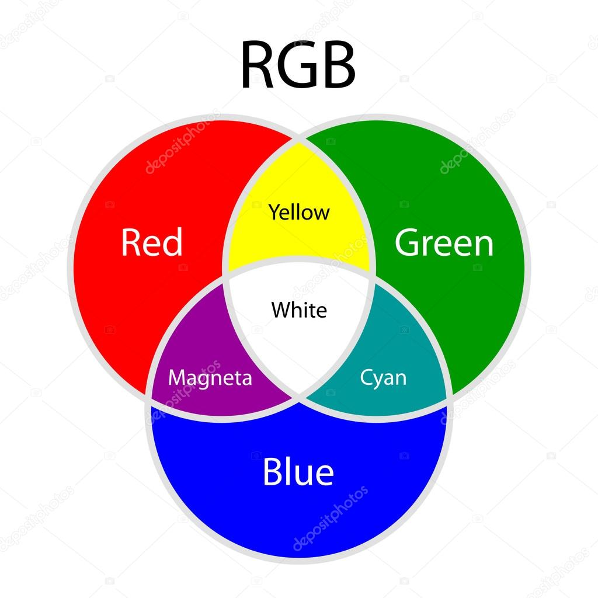

Je hebt verschillende kleurmodellen: RGB en CMYK. Rgb modellen is eigenlijk de afkorting van de kleuren: rood,groen en blauw. Deze kleuren kom je veel tegen, maar vooral op beeldschermen. CMYK modellen bestaan uit 4 basiskleuren. De naam CMYK staat voor cyan, magenta, yellow, key. Met deze kleurmodellen kun je verschillende kleuren maken door deze te mengen met de basiskleuren van de modellen.
